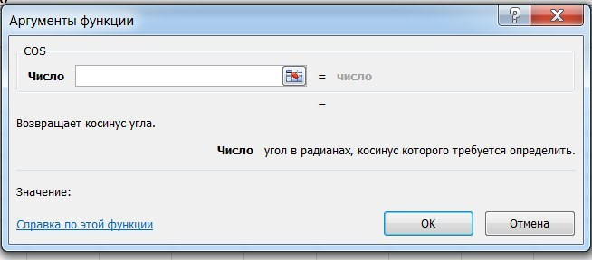
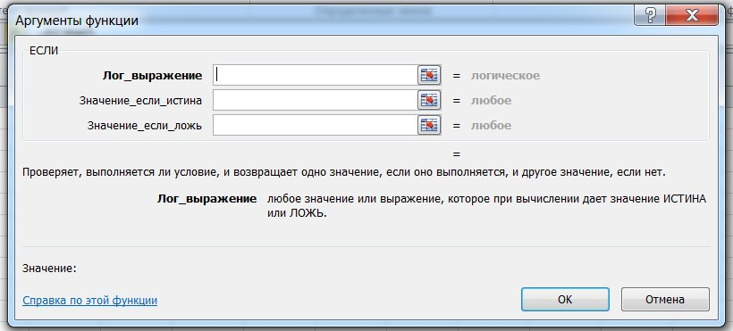
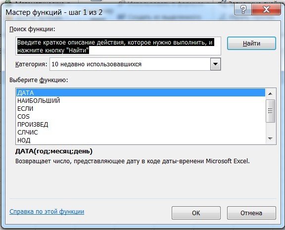
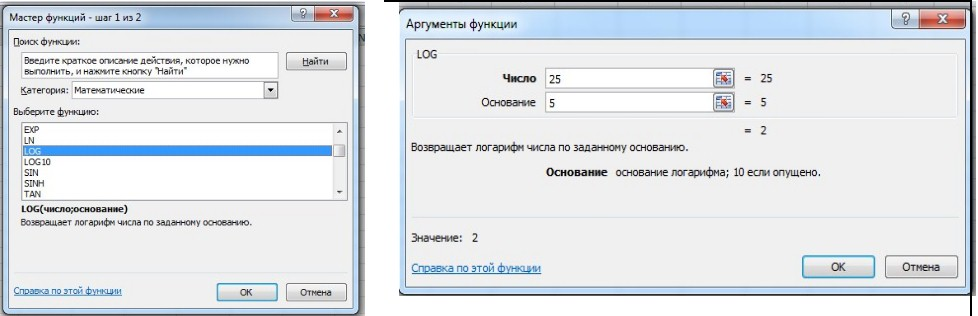
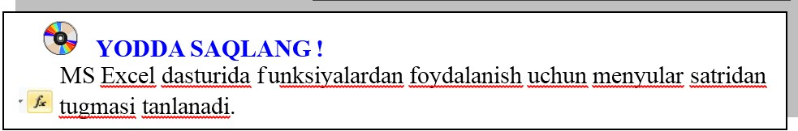

MS Excel 2010 da ishlatiluvchi funksiyalar mazmunan bir-biridan keskin farq qilishi mumkinligidan ularning argumentlari ham o‘z navbatida turli ko‘rinishda berilishi mumkin.
Masalan, Математические функции qismida cos(x) funksiyasida argument bitta haqiqiy qiymatdan iborat bo‘ladi va burchakning qiymati radianda beriladi:

Логические функции qismidagi ЕСЛИ funksiyasida argument mantiqiy ifoda bo‘lib, uning faqat ikkita qiymati (“rost” yoki “yolg‘on”) ga ko‘ra ikki xil natijaga ega bo‘lishimiz mumkin:

Мастер функций oynasida birinchi qadamda kerakli funksiyani kiritib Найти tugmasi yordamida izlab topiladi, ikkinchi qadamda ushbu funksiyaga murojaat etib, argumentlariga qiymatlar beriladi. So‘ngra tanlab olingan funksiya kerakli katakka joylashtiriladi:

1-mashq. log5 25 ifodaning qiymatini hisoblang.
Bajarish:
MS Excel 2010 tasmasidan tugmasi tanlanadi;
Мастер функций oynasidan logarifmni hisoblash Log funksiyasi tanlanadi;
Число qatoriga 25 soni, Основание qatoriga esa, 5 soni kiritilib, OK tugmasi bosiladi:

1. Мастер функций qanday vazifani amalga oshiradi?
2. Funksiyaning argumentlari haqida ma’lumot bering.
3. 5, 10, 15, 20, 25, 30 sonlarining natural logarifmlari yig‘indisini hisoblang va natijani 3 ta raqamgacha yaxlitlang.
4. Мастер функций dan foydalanib berilgan 4, 6, 10, 23 sonlarning eksponentasini hisoblang.
5. Мастер функций dan foydalanib, berilgan 15, 20, 45 62, 94, 112 sonlarining eng kichik umumiy bo‘linuvchisini toping.

1. Мастер функций dan foydalanib, berilgan 15, 20, 45 62, 94, 112 sonlarining eng katta umumiy bo‘luvchisini hisoblang.
2. Мастер функций dan foydalanib, berilgan 10 sonining faktorialini hisoblang.
3. Мастер функций dan foydalanib 2,4567 sonining sinusini hisoblang.